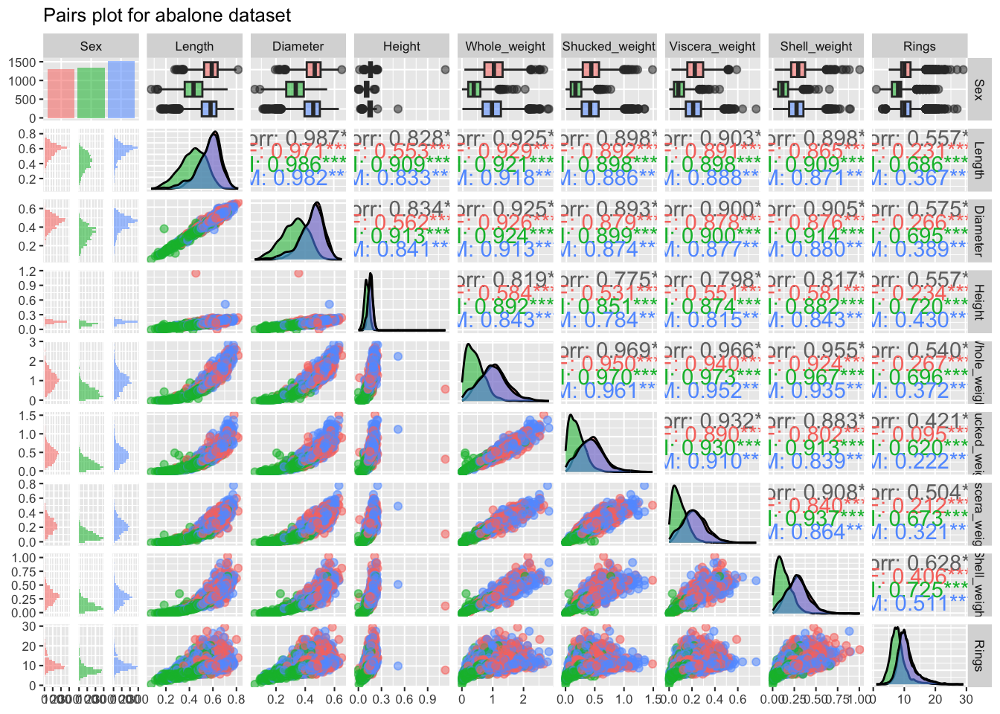
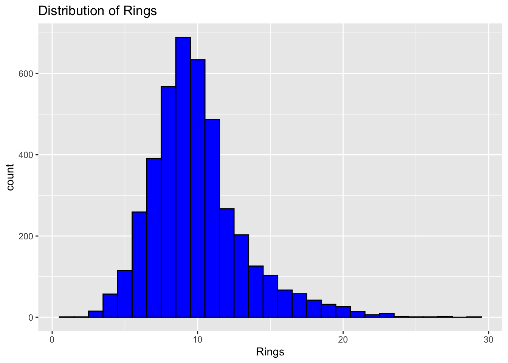
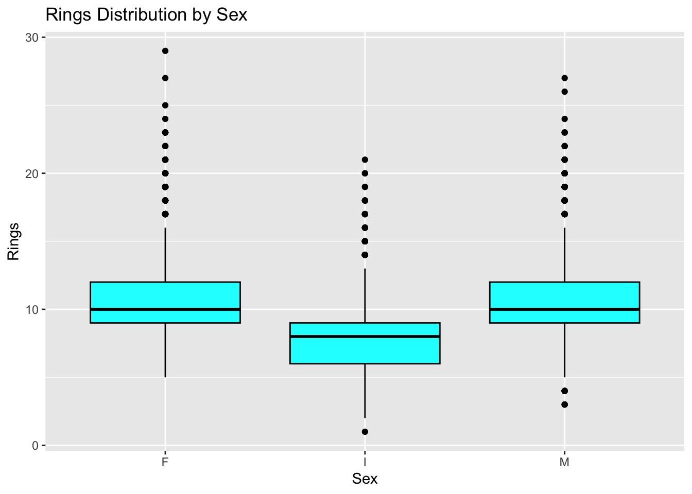
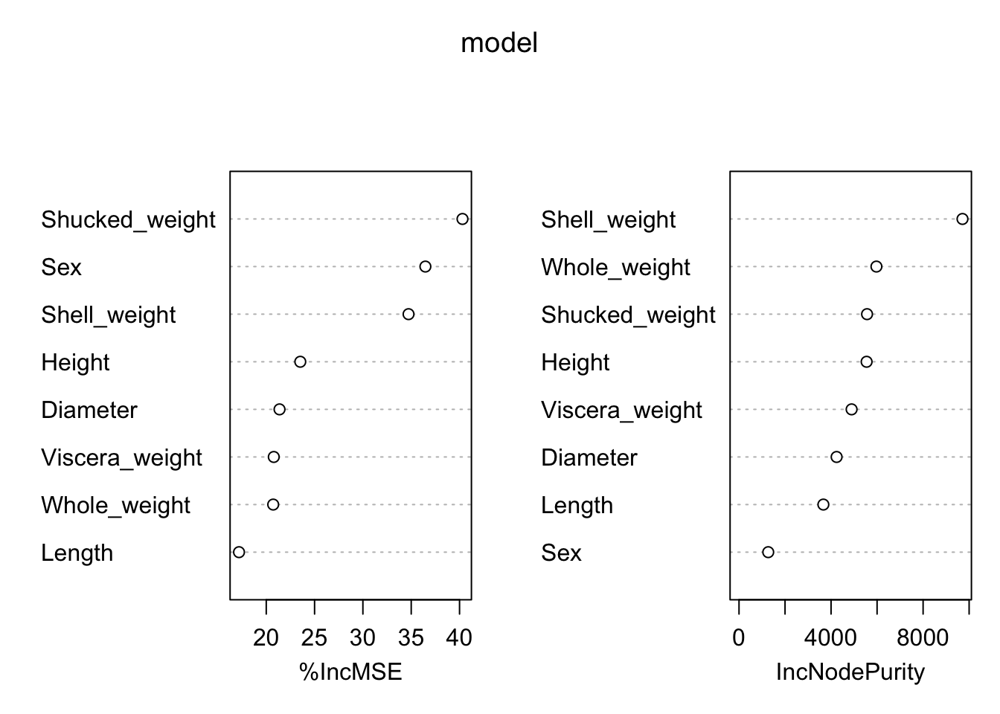
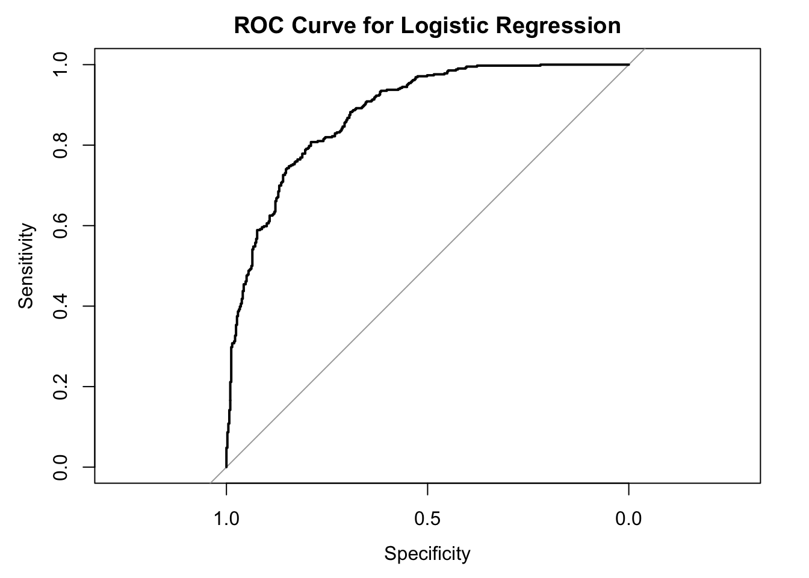
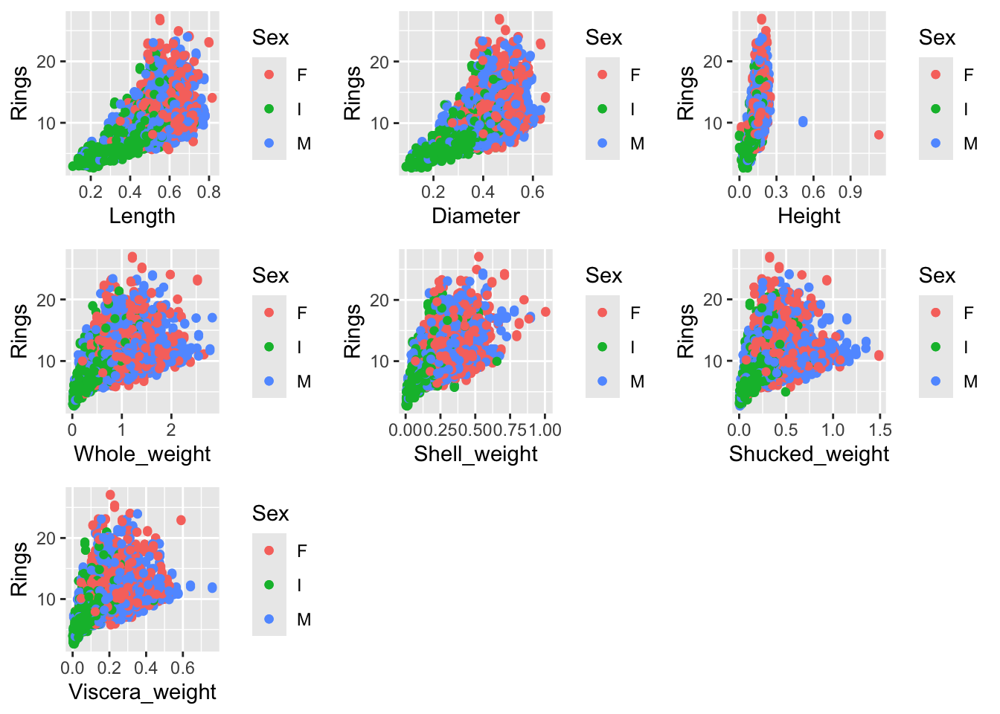

Code
abalone = read.csv("/Users/sriyapothula/Desktop/stat/Abalone/abalone.csv")
sum(is.na(abalone))[1] 0Code
sum(complete.cases(abalone))[1] 4177Group 9
by
Darshini Balakrishnan
Sai Padma Sriya Pothula
Adhi Mohan
The “Age Prediction of Abalone” in this project incorporates a new way to find out the Abalone Age. Abalone’s physical measurements are used to predict the Abalone Age by Random Forest method. This trained model gives us the age of the Abalone in just a few clicks instead of all the labor put into cutting the shell and counting the rings of Abalone, saving the production costs. The data is visualized for a better understanding.
The abalone dataset encapsulates a collection of morphological measurements of abalone, a marine gastropod mollusk, used to predict its age through the number of rings on its shell. Regression models are used for predicting the biological ages based on physical data. The challenge lies in accurately modeling these predictions, which has significant implications for biological research and marine conservation efforts. Our analysis employs various statistical and machine learning techniques to enhance the precision of age prediction, providing insights into the factors most significantly influencing abalone’s aging process.
In this project, we delve into the abalone dataset to develop a robust model that can predict the age of abalone from its physical measurements with high accuracy. Our approach includes a thorough exploratory data analysis to identify patterns and anomalies, preprocessing steps to optimize the dataset for modeling, and the application of multiple regression techniques to compare their effectiveness. The outcome of this project is expected to contribute valuable insights to marine biology by improving the understanding of abalone’s growth factors and supporting the development of data-driven conservation policies.
The dataset comes from a 1994 study “The Population Biology of Abalone (Haliotis species) in Tasmania. I. Blacklip Abalone (H. rubra) from the North Coast and Islands of Bass Strait”.
Abalone, marine snails found in various oceans, are studied not only for their ecological importance but also for their commercial value. The abalone dataset includes several biometric measurements such as length, diameter, height, whole weight, shucked weight, viscera weight, and shell weight, along with the number of rings, which directly correlates to age. This dataset is derived from a comprehensive study aimed at understanding the growth patterns and age distribution of abalone, which is crucial for sustainable harvesting and conservation strategies.
The dependent variable Rings is included in the dataset. It was measured as the number of rings observed after cutting and examining an abalone. Although it does not denote the age of a given abalone directly, it determines it more-or-less perfectly. The age of an abalone equals Rings + 1.5 . Since this relationship holds reliably, Rings will be considered as the dependent variable.
| Row Number | Name | Data Type | Measurement Unit | Description | ||||||
| 1. | Sex | Nominal | NA | Male(M), Female(F) and Infant(F) | ||||||
| 2. | Length | Continuous | mm | Longest Shell measurement | ||||||
| 3. | Diameter | Continuous | mm | Perpendicular to length | ||||||
| 4. | Height | Continuous | mm | Measured with meat in the shell | ||||||
| 5. | Whole weight | Continuous | gm | Whole Abalone weight | ||||||
| 6. | Shucked weight | Continuous | gm | Weight of meat | ||||||
| 7. | Viscera weight | Continuous | gm | Gut weight(after bleeding) | ||||||
| 8. | Shell weight | Continuous | gm | After being dried | ||||||
| 9. | Rings | Integer | NA | +1.5 gives the age in years | ||||||
The first step is to Read the data from the csv file, where we need to check for any missing values. We use the ‘sum’ function to determine if there are any missing values and for the completeness of the data.
[1] 0[1] 4177The above result indicated that the Abalone dataset is a complete dataset.
Let us start with relationship between features ( correlation coefficient matrix) and the relationship between the visual features. The objective of the data visualization step in our research is to conduct a comprehensive exploratory data analysis (EDA) to understand the relationships between various physical measurements of abalones and their sex classification (Female, Male, Infant). The visualization aims to uncover underlying patterns, associations, and distributions within the dataset, which are crucial for informing subsequent data processing and predictive modeling stages.
We employ the GGally package in R, specifically the ggpairs function, to generate a pairs plot. This function is highly effective for visualizing pairwise relationships and distributions across multiple dimensions of a dataset.
── Attaching core tidyverse packages ──────────────────────── tidyverse 2.0.0 ──
✔ dplyr 1.1.4 ✔ readr 2.1.5
✔ forcats 1.0.0 ✔ stringr 1.5.1
✔ ggplot2 3.5.1 ✔ tibble 3.2.1
✔ lubridate 1.9.3 ✔ tidyr 1.3.1
✔ purrr 1.0.2
── Conflicts ────────────────────────────────────────── tidyverse_conflicts() ──
✖ dplyr::filter() masks stats::filter()
✖ dplyr::lag() masks stats::lag()
ℹ Use the conflicted package (<http://conflicted.r-lib.org/>) to force all conflicts to become errorsRegistered S3 method overwritten by 'GGally':
method from
+.gg ggplot2`stat_bin()` using `bins = 30`. Pick better value with `binwidth`.
`stat_bin()` using `bins = 30`. Pick better value with `binwidth`.
`stat_bin()` using `bins = 30`. Pick better value with `binwidth`.
`stat_bin()` using `bins = 30`. Pick better value with `binwidth`.
`stat_bin()` using `bins = 30`. Pick better value with `binwidth`.
`stat_bin()` using `bins = 30`. Pick better value with `binwidth`.
`stat_bin()` using `bins = 30`. Pick better value with `binwidth`.
`stat_bin()` using `bins = 30`. Pick better value with `binwidth`.
From the above plots, Variables such as Length, Diameter, and Whole_weight show strong positive correlations with each other across all sex categories. This is expected as larger abalones generally have greater dimensions and weights. Length diameter and height have similar distributions across sexes but with slight variations in median and variability, particularly between infants and adults. Whole weight and Shucked weight Show significant differences among the sexes, suggesting that these features are good discriminators for sex classification.
The presence of “***” next to a correlation value suggests a very strong statistical significance for that correlation.
In the initial phase of our study, we employ ggplot2 from the tidyverse package to create visual representations of the abalone dataset. A histogram details the distribution of the ‘Rings’ variable, which serves as a proxy for age, while a boxplot is used to compare this distribution across different sex categories, providing insights into central tendencies and variability. Additionally, a pairs plot generated using the base R function pairs visually assesses the relationships among key continuous variables such as Length, Diameter, Height, and Whole_weight. This visualization is instrumental in identifying correlations and potential multicollinearity among predictors. Furthermore, an Analysis of Variance (ANOVA) tests for significant differences in the mean number of rings across sex groups, helping determine if sex significantly influences abalone age.
randomForest 4.7-1.1Type rfNews() to see new features/changes/bug fixes.
Attaching package: 'randomForest'The following object is masked from 'package:dplyr':
combineThe following object is masked from 'package:ggplot2':
marginLoading required package: lattice
Attaching package: 'caret'The following object is masked from 'package:purrr':
liftcorrplot 0.92 loaded
The histogram shows a unimodal distribution with a strong peak around 9 to 10 rings, suggesting that the majority of abalones in the dataset are around 9 to 10 years old. The distribution is slightly right-skewed, indicating a tail of older abalones with more rings. Few abalones have very high ring counts, as seen from the declining frequency past 15 rings, which is typical for biological data where fewer individuals reach older ages. This visualization provides a clear view of the age structure within the abalone population studied, which is crucial for biological and ecological analysis, potentially guiding conservation and harvesting strategies.

The “Pairwise Relationships” plot displays the correlation between several physical measurements of abalones: Length, Diameter, Height, and Whole_weight. Each plot demonstrates a positive correlation among these variables, particularly between Length and Diameter, and Length and Whole_weight, which show strong linear relationships. This indicates that as abalones grow longer, they also tend to increase proportionally in diameter and overall weight. The relationship between Height and the other variables, while still positive, appears weaker and more dispersed, suggesting that height may vary more independently compared to length or diameter. Overall, these relationships are expected in biological organisms, where physical dimensions often scale together, but the varying degrees of correlation may also hint at different growth patterns or environmental adaptations specific to the species.
Furthermore, an Analysis of Variance (ANOVA) tests for significant differences in the mean number of rings across sex groups, helping determine if sex significantly influences abalone age.
The output from the ANOVA (Analysis of Variance) test indicates a significant effect of the variable ‘Sex’ on the number of rings in abalones, which are used as a proxy for age. With a very high F-value of 499.3 and an extremely low p-value (less than 2e-16), we reject the null hypothesis that there are no differences in mean number of rings across the sex categories of abalones. This suggests that the average number of rings, and hence the age distribution, differs statistically significantly between the sexes. The degrees of freedom for the ‘Sex’ group is 2, reflecting the three levels compared (female, male, and infant), and the residuals have 4174 degrees of freedom, indicating the sample size minus the number of groups. This strong statistical evidence supports that sex is a significant factor influencing the age as measured by rings in abalones.
Correlation analysis is conducted using the cor function to establish a correlation matrix for numerical variables, quantifying the degree of linear relationships between them. This analysis aids in feature selection and informs subsequent modeling strategies. The study progresses by employing machine learning techniques where a Random Forest model is trained using the randomForest package to ascertain variable importance, which guides the refinement of our predictive models. Subsequent models, including Support Vector Machines (SVM), Gradient Boosting Machines (GBM), and Linear Regression, are trained and compared using the caret package to evaluate their performance based on Root Mean Square Error (RMSE) and R^2 metrics. These steps encapsulate our approach to harnessing advanced analytics to predict the age of abalones more accurately, enhancing our understanding of this species’ growth patterns.
Length Diameter Height Whole_weight Shucked_weight
Length 1.0000000 0.9868116 0.8275536 0.9252612 0.8979137
Diameter 0.9868116 1.0000000 0.8336837 0.9254521 0.8931625
Height 0.8275536 0.8336837 1.0000000 0.8192208 0.7749723
Whole_weight 0.9252612 0.9254521 0.8192208 1.0000000 0.9694055
Shucked_weight 0.8979137 0.8931625 0.7749723 0.9694055 1.0000000
Viscera_weight 0.9030177 0.8997244 0.7983193 0.9663751 0.9319613
Shell_weight 0.8977056 0.9053298 0.8173380 0.9553554 0.8826171
Rings 0.5567196 0.5746599 0.5574673 0.5403897 0.4208837
Viscera_weight Shell_weight Rings
Length 0.9030177 0.8977056 0.5567196
Diameter 0.8997244 0.9053298 0.5746599
Height 0.7983193 0.8173380 0.5574673
Whole_weight 0.9663751 0.9553554 0.5403897
Shucked_weight 0.9319613 0.8826171 0.4208837
Viscera_weight 1.0000000 0.9076563 0.5038192
Shell_weight 0.9076563 1.0000000 0.6275740
Rings 0.5038192 0.6275740 1.0000000The variable importance plots from a random forest model reveal key predictors for estimating the age of abalones, measured by the number of rings. In the left plot, which shows percentage increase in mean squared error (%IncMSE), ‘Shucked_weight’ emerges as the most critical predictor, followed by ‘Sex’ and ‘Shell_weight’, indicating that model accuracy heavily relies on these variables. The right plot, displaying increase in node purity (IncNodePurity), also highlights ‘Shell_weight’ as the top variable, with ‘Whole_weight’ and ‘Shucked_weight’ also showing significant influence. These metrics suggest that factors related to the physical composition of abalones, particularly the weights of different body parts, along with the sex, play crucial roles in accurately determining their age, with these variables significantly affecting the model’s predictive accuracy and ability to create homogeneous groups.
The dataset is split into training and testing sets, 80-20 respectively. The training control is prepared for 10-fold cross-validation, a technique that improves the reliability of model evaluation by training and testing the models on ten distinct data subsets.
Random Forest: A regression model utilizing random forests is trained. Multiple decision trees are used in this ensemble model to reduce overfitting and increase prediction accuracy.

abalone_no_sex <- abalone[, !names(abalone) %in% c("Sex")]
index <- createDataPartition(abalone_no_sex$Rings, p = 0.8, list = TRUE)
train_data <- abalone_no_sex[index$Resample1,]
test_data <- abalone_no_sex[-index$Resample1,]
train_control <- trainControl(
method = "cv",
number = 10
)
models <- list()
models$rf <- train(Rings ~ ., data = abalone_no_sex, method = "rf", trControl = train_control)Support Vector Machine (SVM): Data scaling is used to standardize feature scales after an SVM model with a radial basis function kernel has been trained.
Gradient Boosting Machine (GBM): After training, a GBM model creates trees one at a time, with each new tree aiding in the correction of mistakes produced by trees that have already been trained.
Linear Regression: Linear regression model is trained, which is useful as a baseline to assess the performance of more complex models.
predictions_rf <- predict(models$rf, test_data)
predictions_svm <- predict(models$svm, test_data)
predictions_gbm <- predict(models$gbm, test_data)
predictions_lm <- predict(models$lm, test_data)
rmse_rf <- RMSE(predictions_rf, test_data$Rings)
r2_rf <- R2(predictions_rf, test_data$Rings)
rmse_svm <- RMSE(predictions_svm, test_data$Rings)
r2_svm <- R2(predictions_svm, test_data$Rings)
rmse_gbm <- RMSE(predictions_gbm, test_data$Rings)
r2_gbm <- R2(predictions_gbm, test_data$Rings)
rmse_lm <- RMSE(predictions_lm, test_data$Rings)
r2_lm <- R2(predictions_lm, test_data$Rings)
cat("RF RMSE:", rmse_rf, "R2:", r2_rf, "\n")RF RMSE: 0.974506 R2: 0.9249036 SVM RMSE: 1.969508 R2: 0.6417577 GBM RMSE: 1.893171 R2: 0.6613736 LM RMSE: 2.125251 R2: 0.5691083 Random Forest shows the best performance among all models tested, with the lowest RMSE and highest R². This suggests it is most effective at capturing the variance in the data and making accurate predictions about the age of abalones.Based on the measurements, the Random Forest model is the clear winner and the best option for this specific forecasting task. Its low RMSE shows that its predictions are near to real values, and its strong R² value suggests that it can explain a considerable percentage of the variance in the age of abalones.
This methodically investigate several parameter choices to get the optimal option that reduces the root mean square error (RMSE) while estimating the number of rings in abalones. In addition to trying to increase accuracy, the model tuning makes sure the model performs well when applied to previously unknown data by employing a grid search with cross-validation. This methodical technique aids in choosing the best model settings to successfully improve predictive performance.
train_control <- trainControl(method = "cv", number = 10, search = "grid")
tune_grid <- expand.grid(
mtry = seq(2, ncol(abalone_no_sex) - 1, by = 1),
splitrule = c("variance"),
min.node.size = c(5, 10)
)
set.seed(12)
tuned_model <- train(Rings ~ ., data = abalone_no_sex, method = "ranger",
trControl = train_control, tuneGrid = tune_grid,
metric = "RMSE")By using PCA, you reduce noise and computational load, potentially improving the models’ performances. Training multiple models allows for a comparative analysis to determine which model best handles the PCA-transformed data in predicting abalone age.
library(caret)
library(FactoMineR)
#abalone_no_sex =abalone[, !names(abalone) %in% c("Sex")]
abalone_pca = abalone_no_sex[, !names(abalone) %in% c("Rings")]
data = abalone_pca
data_scaled = scale(data)
pca_result = PCA(data_scaled, graph = FALSE)
num_components = which(cumsum(pca_result$eig[,2]) > 85)[1]
data_pca = pca_result$ind$coord[, 1:num_components]
num_components = which(cumsum(pca_result$eig[,2]) > 85)[1]
data_pca = pca_result$ind$coord[, 1:num_components]
final_data = data.frame(Rings = abalone_pca$Rings, data_pca)
set.seed(12)
index = createDataPartition(final_data$Rings, p = 0.8, list = TRUE)
train_data_pca = final_data[index$Resample1,]
test_data_pca = final_data[-index$Resample1,]
train_control_pca = trainControl(method = "cv", number = 10)
models_pca = list()
models_pca$rf = train(Rings ~ ., data = train_data_pca, method = "rf", trControl = train_control_pca)note: only 1 unique complexity parameters in default grid. Truncating the grid to 1 .models_pca$svm = train(Rings ~ ., data = train_data_pca, method = "svmRadial", trControl = train_control_pca)
models_pca$gbm = train(Rings ~ ., data = train_data_pca, method = "gbm", trControl = train_control_pca, verbose = FALSE)
# Linear Regression
models_pca$lm <- train(Rings ~ ., data = train_data_pca, method = "lm", trControl = train_control_pca)
predictions_rf_pca = predict(models_pca$rf, test_data_pca)
predictions_svm_pca = predict(models_pca$svm, test_data_pca)
predictions_gbm_pca = predict(models_pca$gbm, test_data_pca)
predictions_lm_pca = predict(models_pca$lm, test_data_pca)
rmse_rf_pca = RMSE(predictions_rf_pca, test_data_pca$Rings)
r2_rf_pca = R2(predictions_rf_pca, test_data_pca$Rings)
rmse_svm_pca = RMSE(predictions_svm_pca, test_data_pca$Rings)
r2_svm_pca = R2(predictions_svm_pca, test_data_pca$Rings)
rmse_gbm_pca = RMSE(predictions_gbm_pca, test_data_pca$Rings)
r2_gbm_pca = R2(predictions_gbm_pca, test_data_pca$Rings)
rmse_lm_pca = RMSE(predictions_lm_pca, test_data_pca$Rings)
r2_lm_pca = R2(predictions_lm_pca, test_data_pca$Rings)
cat("RF RMSE:", rmse_rf_pca, "R2:", r2_rf_pca, "\n")RF RMSE: 0.4754979 R2: 0.9781475 SVM RMSE: 0.7983523 R2: 0.9387943 GBM RMSE: 0.5245579 R2: 0.9734159 LM RMSE: 0.5061476 R2: 0.9754974 On this changed dataset, Random Forest is clearly the best performer, but Linear Regression also demonstrates excellent performance. By separating the most important characteristics and minimizing noise and duplication in the data, the application of PCA prior to model training has probably improved performance. In practical settings, these models—Random Forest and Linear Regression in particular—would be very useful for age prediction based on physical attributes, such as in biological research or abalone resource management.
#Shiny
Abalones are classified into Mature and Immature based on the count of their Rings. It involves determining whether the abalone has reached a biological threshold that marks it as mature or immature. This method relies on analyzing the ring count, which correlates with age, as each ring generally signifies one year of growth.
Using the training data as a Logistic Regression model, all other variables are used by the model to forecast the ‘Mature’ status; however, ‘Rings’ is specifically left out since ‘Mature’ is derived directly from it. The dependent variable (logistic regression) is binary, according to the binomial family specification. With logistic regression, data is fitted to a logistic curve to determine the likelihood that an event will occur. The values it gives, which range from 0 to 1, are understood as the likelihood that a certain observation falls into the category designated as “1.” This makes it perfect for situations when you want to determine the likelihood of an outcome in addition to predicting a binary outcome.Since the maturity status is a binary variable, logistic regression is the obvious choice.
Type 'citation("pROC")' for a citation.
Attaching package: 'pROC'The following objects are masked from 'package:stats':
cov, smooth, varabalone$Mature <- if_else(abalone$Rings >= 10, "mature", "immature")
abalone$Sex <- as.factor(abalone$Sex)
set.seed(12)
index <- createDataPartition(abalone$Mature, p = 0.8, list = TRUE)
train_data <- abalone[index[[1]], ]
test_data <- abalone[-index[[1]], ]
train_data$Mature <- as.integer(train_data$Mature == "mature")
model_log <- glm(Mature ~ . -Rings, data = train_data, family = binomial())
predictions_log <- predict(model_log, test_data, type = "response")
predicted_classes_log <- if_else(predictions_log > 0.5, "mature", "immature")
predicted_classes_log <- factor(predicted_classes_log, levels = c("immature", "mature"))
test_data$Mature <- factor(test_data$Mature, levels = c("immature", "mature"))
confusion_matrix <- confusionMatrix(predicted_classes_log, test_data$Mature)
roc_curve <- roc(test_data$Mature, predictions_log)Setting levels: control = immature, case = matureSetting direction: controls < cases
The ROC (Receiver Operating Characteristic) curve shown for the logistic regression model used to predict the maturity of abalones based on their ring counts provides a visual assessment of the model’s diagnostic ability. The ROC curve plots the true positive rate (sensitivity) against the false positive rate (1 - specificity) across a range of decision thresholds. A curve that approaches the top left corner of the plot indicates a high level of sensitivity and specificity, demonstrating an excellent predictive performance. In this graph, the curve significantly deviates from the diagonal line, which represents a random guess, suggesting that the logistic regression model has a strong ability to distinguish between mature and immature abalones. The area under the curve (AUC), while not explicitly stated, appears to be substantially higher than 0.5 (the AUC of a random classifier), confirming the effectiveness of the model.
The dataset is divided into 3 distinct subsets - Male, Female and Infant. Here, we are creating DataPartition() and each subset is further split into Training and Testing sets. Following this, Random Forest models are constructed independently for every Sex category, with the Sex. varibale being eliminated as a predictor. The glimpse(abalone) function call is likely used for a quick overview of the abalone dataset to understand its structure and variables.
The performance metrics for each model are printed, showing the RMSE and R² values for males, females, and infants. These metrics help in comparing the accuracy and explanatory power of the models across different sex categories, highlighting potential differences in prediction reliability and effectiveness.
Rows: 4,177
Columns: 10
$ Sex <fct> M, M, F, M, I, I, F, F, M, F, F, M, M, F, F, M, I, F, M…
$ Length <dbl> 0.455, 0.350, 0.530, 0.440, 0.330, 0.425, 0.530, 0.545,…
$ Diameter <dbl> 0.365, 0.265, 0.420, 0.365, 0.255, 0.300, 0.415, 0.425,…
$ Height <dbl> 0.095, 0.090, 0.135, 0.125, 0.080, 0.095, 0.150, 0.125,…
$ Whole_weight <dbl> 0.5140, 0.2255, 0.6770, 0.5160, 0.2050, 0.3515, 0.7775,…
$ Shucked_weight <dbl> 0.2245, 0.0995, 0.2565, 0.2155, 0.0895, 0.1410, 0.2370,…
$ Viscera_weight <dbl> 0.1010, 0.0485, 0.1415, 0.1140, 0.0395, 0.0775, 0.1415,…
$ Shell_weight <dbl> 0.150, 0.070, 0.210, 0.155, 0.055, 0.120, 0.330, 0.260,…
$ Rings <int> 15, 7, 9, 10, 7, 8, 20, 16, 9, 19, 14, 10, 11, 10, 10, …
$ Mature <chr> "mature", "immature", "immature", "mature", "immature",…abalone_m <- abalone %>% filter(Sex == 'M')
abalone_f <- abalone %>% filter(Sex == 'F')
abalone_i <- abalone %>% filter(Sex == 'I')
library(caret)
set.seed(123)
trainIndex_m <- createDataPartition(abalone_m$Rings, p = 0.8, list = FALSE)
train_m <- abalone_m[trainIndex_m, ]
test_m <- abalone_m[-trainIndex_m, ]
trainIndex_f <- createDataPartition(abalone_f$Rings, p = 0.8, list = FALSE)
train_f <- abalone_f[trainIndex_f, ]
test_f <- abalone_f[-trainIndex_f, ]
trainIndex_i <- createDataPartition(abalone_i$Rings, p = 0.8, list = FALSE)
train_i <- abalone_i[trainIndex_i, ]
test_i <- abalone_i[-trainIndex_i, ]
library(randomForest)
model_m <- randomForest(Rings ~ . -Sex, data = train_m)
model_f <- randomForest(Rings ~ . -Sex, data = train_f)
model_i <- randomForest(Rings ~ . -Sex, data = train_i)
predictions_m <- predict(model_m, test_m)
rmse_m <- sqrt(mean((predictions_m - test_m$Rings)^2))
r2_m <- cor(predictions_m, test_m$Rings)^2
predictions_f <- predict(model_f, test_f)
rmse_f <- sqrt(mean((predictions_f - test_f$Rings)^2))
r2_f <- cor(predictions_f, test_f$Rings)^2
predictions_i <- predict(model_i, test_i)
rmse_i <- sqrt(mean((predictions_i - test_i$Rings)^2))
r2_i <- cor(predictions_i, test_i$Rings)^2
cat("Male RMSE:", rmse_m, "R²:", r2_m, "\n")Male RMSE: 1.938495 R²: 0.5603675 Female RMSE: 2.333701 R²: 0.4842709 Infant RMSE: 1.337307 R²: 0.7408071 The models perform best for infant abalones, indicating that the features selected for prediction are more predictive for this group. In contrast, the models for male and especially female abalones show lower accuracy and fit, suggesting potential complexities or variations in growth patterns not as effectively captured by the model. This analysis highlights the need for potentially refining the models or exploring additional features that could better account for the variations in ring counts, particularly for female abalones.
Predictor transformations are techniques used to modify the original predictor variables to enhance the performance and interpretability of models. These transformations are crucial for addressing issues such as non-linearity, non-normality, heteroscedasticity (non-constant variance), and to better capture the relationships between predictors and the response variable.
Attaching package: 'gridExtra'The following object is masked from 'package:randomForest':
combineThe following object is masked from 'package:dplyr':
combinelibrary(tidyverse)
set.seed(42)
indexes <- sample(1:nrow(abalone), size = 0.3 * nrow(abalone))
abalone_train <- abalone[-indexes,]
abalone_test <- abalone[indexes,]
par(mfrow = c(3, 3),oma=c(0,0,0,0))
create_scatter_plot <- function(xvar,yvar,xtitle,ytitle) {
ggplot(abalone_train,aes(x=xvar,y=yvar, col=Sex)) +
geom_point() +
geom_jitter() +
xlab(paste(xtitle)) +
ylab(paste(ytitle))
}
grid.arrange(
create_scatter_plot(abalone_train$Length,abalone_train$Rings,"Length","Rings"),
create_scatter_plot(abalone_train$Diameter,abalone_train$Rings,"Diameter","Rings"),
create_scatter_plot(abalone_train$Height,abalone_train$Rings,"Height","Rings"),
create_scatter_plot(abalone_train$Whole_weight,abalone_train$Rings,"Whole_weight","Rings"),
create_scatter_plot(abalone_train$Shell_weight,abalone_train$Rings,"Shell_weight","Rings"),
create_scatter_plot(abalone_train$Shucked_weight,abalone_train$Rings,"Shucked_weight","Rings"),
create_scatter_plot(abalone_train$Viscera_weight,abalone_train$Rings,"Viscera_weight","Rings")
)
The scatter plots provided display various physical measurements against the number of rings in abalones, categorized by sex. These plots suggest potential non-linear relationships and variable scales, indicating that transformations such as logarithmic, polynomial, or standardizing might enhance model accuracy by normalizing distributions and reducing skewness. The evident differences across sexes also hint that interactions between predictors and sex could be significant, potentially necessitating separate models or tailored transformations for each sex group. Implementing such transformations could address the non-linear patterns, manage the influence of outliers, and standardize predictor scales, thereby improving the interpretability and performance of predictive models for estimating abalone age.
Handling Non-Linearity: Random forests effectively manage non-linear relationships between variables without the need for transformations, making them ideal for complex ecological data like that of abalones.
Feature Importance: This method provides valuable insights into which features (e.g., shell weight, diameter) are most predictive of age, aiding in understanding biological growth patterns.
Robust to Overfitting: Due to the ensemble nature of random forests, where multiple trees vote on the outcome, the model is generally more robust to overfitting compared to single decision trees.
Accommodating Missing Data: Random forests can handle missing values in the data without requiring explicit imputation, which can simplify preprocessing steps.
Model Flexibility: They can be used for both classification and regression tasks, providing flexibility in terms of application.
Model Complexity and Interpretability: Random forests involve numerous decision trees, which can make the model complex and difficult to interpret compared to simpler, linear models.
Computationally Intensive: Training a random forest can be computationally expensive, especially with a large number of trees and deep tree structures.
Less Effective for Extrapolation: They do not perform well in cases where predictions need to be made outside the range of the training data’s features.
Hyperparameter Tuning: Determining the optimal number of trees, depth of each tree, and other parameters can be time-consuming and requires a methodical approach to tuning.
Data Imbalance: If the dataset is imbalanced, random forest models can be biased towards the majority class, especially in classification tasks.
High Dimensionality: While random forests handle multiple features well, extremely high-dimensional spaces (many features) can lead to longer training times and might require dimensionality reduction techniques to ensure model efficiency.
No Performance Guarantee: As with any machine learning model, there is no guarantee that a random forest will perform well on all types of data, and its success heavily depends on the nature of the dataset and how representative the training data is of the broader population of abalones.
Conclusion:
As a summary to the Research questions in report,
According to the analysis and interpretation when the physical measurements are high i.e., when the length, diameter and weight is a greater number then the age of the abalone is also older.Random Forest and Logistic Regression models were employed to predict abalone age, defined by the number of rings (age = rings + 1.5 years). Predictive models used physical measurements like shell length, diameter, and weight as inputs.
The age of abalone was predicted by comparing various different models such as SVM, GBM, random forest and Linear Regression, out of which Random forest gave the best accuracy of 97% after PCA data was used for the model.
Random Forest models were trained separately for male, female, and infant abalones. The results indicated differences in predictive accuracy.findings suggest significant differences in how well physical measurements can predict age across different sex categories. This could be due to intrinsic differences in growth patterns or the effectiveness of the used features in capturing underlying patterns for each category.Infant Abalones exhibited the best predictive accuracy with an RMSE of 1.765061 and an R² of 0.5488142, suggesting that age prediction is more straightforward or consistent in younger abalones, or the features used are more predictive for this group.
References:
[1] UCI Machine Learning Repository. (n.d.). https://archive.ics.uci.edu/dataset/1/abalone
[2] Allhan Uysal and Altay Guvenir. Instance-Based Regression by Partitioning Feature projections. Applied.2004.
[3] Lin, A., & Meyers, M. A. (2005), Growth and structure in abalone shell. Materials Science and Engineering: A, 390(1-2), 27-41